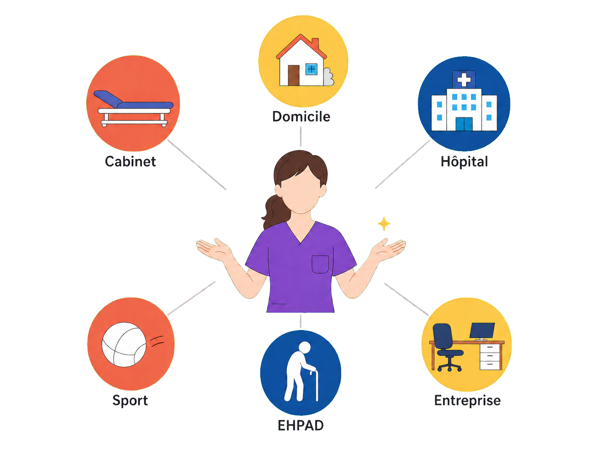
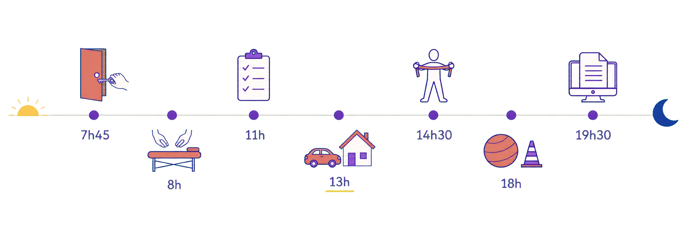
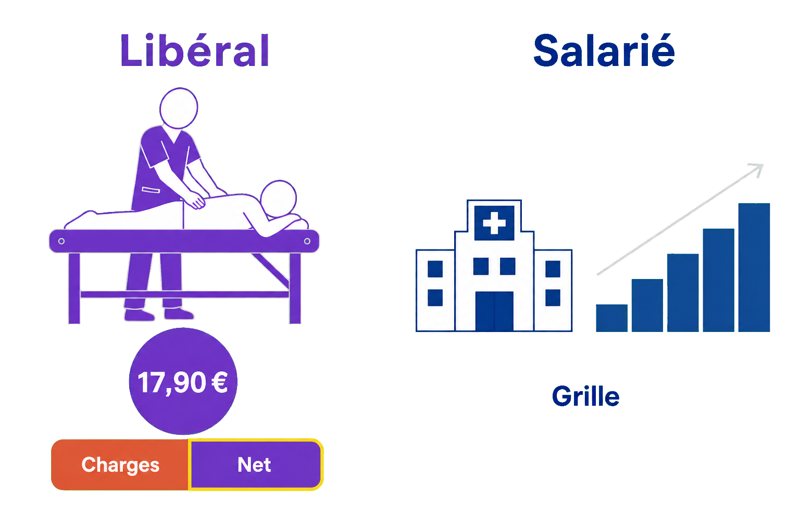
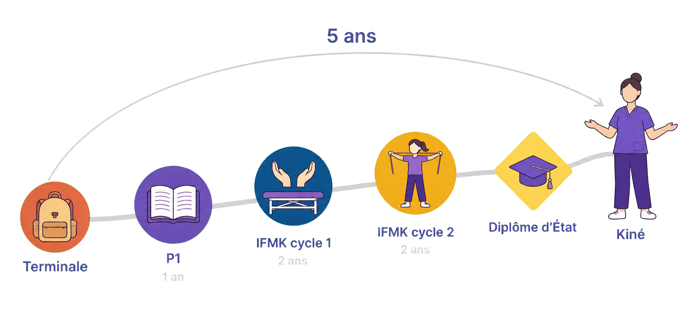
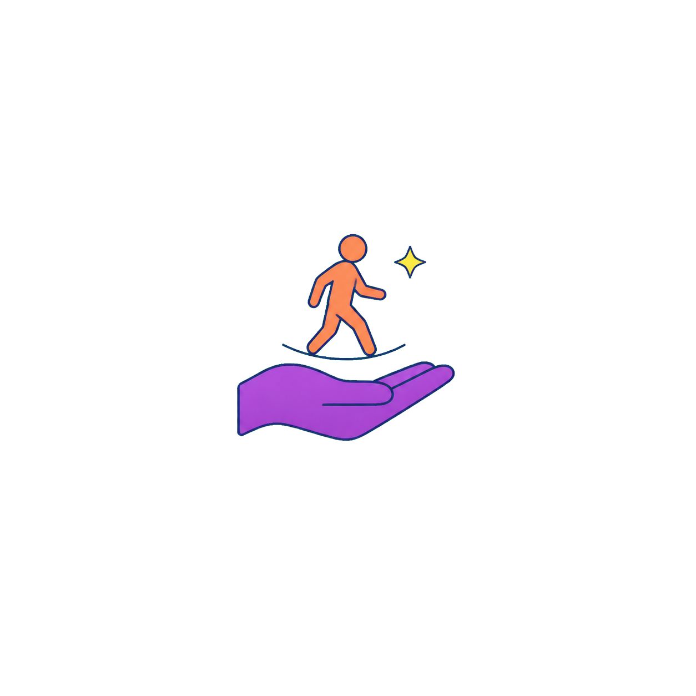

Kinésithérapeute : le métier en vrai
109 000 kinés en France — et plus de 8 sur 10 sont leur propre patron, du cabinet de quartier au bord des terrains.
5 ans après le bac, un diplôme de grade master — et un métier qui soigne avec les mains, sans médicament ni bistouri.

à placer dans : /public/images/metiers/
Petite illustration SANS fond (PNG transparent) : un kinésithérapeute au centre, mains ouvertes, entouré de six pastilles pictogrammes (cabinet, domicile, hôpital, sport, EHPAD, entreprise), format paysage 4:3.
Remettre un sportif sur pied, réapprendre à marcher après un accident, aider un nouveau-né ou une grand-mère à mieux respirer : le kinésithérapeute est le spécialiste du mouvement — celui qui soigne avec ses mains, sans médicament ni bistouri. C'est un métier de relation longue : on accompagne ses patients séance après séance, parfois pendant des mois, et on voit les progrès à l'œil nu. C'est aussi l'un des rares métiers de santé où plus de 8 professionnels sur 10 sont leur propre patron. Sur cette fiche, on te montre le quotidien réel — les séances, les circuits de l'argent, le chemin depuis la Terminale — pour que tu puisses te projeter les yeux ouverts.
Ta journée si tu deviens kinésithérapeute
- 1 7h45 — Ouverture. Tu ouvres le cabinet, tu allumes le plateau technique (la salle d'appareils : vélos, poulies, tables de soins) et tu regardes l'agenda : 25 rendez-vous aujourd'hui. Le premier patient sonne à 8h.
- 2 8h — Les séances s'enchaînent. Une épaule opérée, une lombalgie (un mal du bas du dos), un genou en rééducation après une entorse. Une séance dure environ 30 minutes : les mains, les exercices, les encouragements.
- 3 11h — Un nouveau patient. Place au bilan : tu interroges, tu mesures, tu testes — pour poser ton diagnostic kinésithérapique (non pas le nom d'une maladie, mais d'où vient le problème de mouvement et comment le corriger).
- 4 13h — Tournée à domicile. Chez une patiente âgée qui réapprend à marcher après une chute. À domicile, tu vois la personne dans sa vraie vie — l'escalier, le tapis qui glisse — et c'est souvent là que tout se joue.
- 5 14h30 — Les patients au long cours. Un monsieur hémiplégique (paralysé d'un côté après un AVC, un accident vasculaire cérébral), une adolescente suivie pour une scoliose : des progrès qui se gagnent sur des semaines, parfois des mois. La patience est un outil de travail.
- 6 18h — Le créneau des actifs. Ceux qui sortent du travail et les sportifs du club d'à côté remplissent la fin de journée : le cabinet ne désemplit pas.
- 7 19h30 — Fermeture… et gestion. Télétransmission des séances à l'Assurance Maladie, factures, un œil sur la comptabilité : en libéral, tu es aussi chef d'entreprise.

à placer dans : /public/images/metiers/
Bandeau très large et fin SANS fond (PNG transparent) : ligne du temps soleil → lune, sept petits pictogrammes horodatés de la journée d'un kiné libéral — aucun autre mot que les heures.
Où tu peux exercer
- 1 Libéral — ton propre patron. Seul en cabinet ou en cabinet de groupe (la formule qui se développe : matériel partagé, continuité des soins), avec des visites à domicile — c'est le mode d'exercice de plus de 8 kinés sur 10. Grande liberté d'organisation et patientèle fidèle, en échange : pas de congés payés, et un rythme que tu choisis toi-même, une amplitude 8h-20h, et pas de congés payés.
- 2 Salarié — l'équipe et les cas qu'on ne voit qu'à l'hôpital. À l'hôpital public, en clinique ou en centre de rééducation : réanimation, neurologie lourde, grands brûlés — avec une équipe pluridisciplinaire autour de toi. Salaire fixe, congés payés, 35 heures par semaine dans le public. En échange, une rémunération plus faible qu'en libéral.
- 3 Mixte — le cabinet et autre chose. Beaucoup de kinés panachent : cabinet + vacations (des demi-journées salariées en établissement), ou cabinet + terrain de sport. Attention à l'image toute faite : le kiné d'équipe professionnelle est très rare — en club amateur, c'est souvent du bénévolat. Compte des semaines aussi pleines qu'en libéral (45 h et plus), à composer toi-même.
Combien tu gagnes — et comment
- 1 En libéral : payé à l'acte, à la séance. Pas de salaire : chaque séance conventionnée rapporte ≈ 17,90 € (tarif fixé par l'Assurance Maladie depuis le 1ᵉʳ janvier 2026 — de 17,83 à 17,97 € selon la situation clinique traitée) pour une séance d'environ 30 minutes. Et c'est là que se joue tout le métier : tu es payé au patient, pas à l'heure. Sur un plateau technique, rien ne t'empêche de suivre 2, 3 ou 4 patients dans la même heure — pendant que l'un fait ses exercices sous ta surveillance, tu prends le suivant. Ton revenu du mois dépend donc du nombre de patients que tu as vus, et c'est à toi de trouver ton équilibre entre la quantité et la qualité des soins : c'est le vrai arbitrage du kiné libéral, et personne ne le fera à ta place. Mais honoraires ≠ revenu : environ la moitié part en charges (cotisations, local, matériel, assurances). Un titulaire installé gagne en moyenne ≈ 3 400 € net par mois avant impôt — mais la moitié des kinés gagne moins de 2 600 € (UNASA, revenus 2023 : moyenne 3 400 €, médiane 2 600 €). L'écart n'a rien d'anodin : c'est exactement le nombre de patients pris qui sépare les deux, une minorité à gros volume tirant la moyenne vers le haut. En remplacement, tu factures exactement les mêmes séances aux mêmes tarifs qu'un titulaire : tu reverses simplement une rétrocession au kiné que tu remplaces (un pourcentage convenu entre vous), et en échange tu n'as ni loyer, ni matériel, ni personnel à payer. De quoi travailler partout en France, choisir tes périodes et voyager entre deux remplacements.
- 2 En salarié : une grille nationale. À l'hôpital public, tu gravis une grille à échelons : ≈ 1 900 € net au début (complément Ségur inclus) pour 35 heures par semaine, jusqu'à ≈ 3 260 € net au sommet de la grille — le détail exact est dans le livret ci-dessous. En clinique ou en centre de rééducation privé, l'embauche se négocie autour de 2 000 à 2 300 € brut selon la convention de l'établissement.
- 3 Et pendant les études ? Contrairement à l'interne en médecine, l'étudiant kiné n'a pas de salaire : les stages versent une indemnité de 36 à 60 € par semaine selon l'année. La vraie question, c'est le coût de l'école : 170 à 243 € l'année en IFMK public depuis 2023… mais jusqu'à ≈ 10 000 € l'année dans certains IFMK privés — la vérité complète est dans le livret ci-dessous.
📖 L'argent pendant les études : la vérité des frais (et des petites indemnités)›
En kiné, la question n'est pas « combien tu gagnes pendant tes études » mais « combien elles te coûtent » : tout dépend de l'école — pour le même diplôme d'État à la sortie.
| Poste | Montant | Précision |
|---|---|---|
| P1 à l'université (PASS ou LAS) | 178 € l'année | droits d'inscription universitaires 2025-2026, + CVEC 105 € (la contribution de vie étudiante) |
| IFMK public — années 1 et 2 | 170 € / an | tarif unique imposé aux 25 IFMK publics depuis la rentrée 2023 (arrêté du 27 mars 2023) |
| IFMK public — années 3 et 4 | 243 € / an | même arrêté — aucun frais supplémentaire ne peut être exigé |
| IFMK privé à but non lucratif | ≈ 5 400 € / an | moyenne constatée (enquête L'Étudiant / FNEK) |
| IFMK privé à but lucratif | ≈ 9 000 à 10 100 € / an | ex. : 10 100 € à l'École d'Assas pour 2026-2027 |
| Indemnité de stage — 1ʳᵉ année d'IFMK | 36 € / semaine de stage | arrêté du 16 décembre 2020 |
| Indemnité de stage — 2ᵉ année | 46 € / semaine | versée au prorata des jours de stage réalisés |
| Indemnité de stage — 3ᵉ et 4ᵉ années | 60 € / semaine | idem |
| Gratification (stage de plus de 2 mois dans la même structure) | 4,50 € / heure depuis janvier 2026 | rare : peu de stages d'IFMK dépassent ce seuil |
Avant l'arrêté du 27 mars 2023, les IFMK publics facturaient de 376,50 € à 5 600 € par an selon l'établissement — l'alignement sur les tarifs universitaires a tout changé pour les 25 instituts publics. Les IFMK privés restent libres de leurs tarifs.
💡 Attention : tu ne choisis pas toujours entre public et privé — l'affectation dépend de ton classement en P1 et des instituts reliés à ta fac (dans certaines villes, l'école reliée est privée). Des bourses régionales existent, sous conditions de ressources : les formations de kiné dépendent des Régions — renseigne-toi tôt.
📖 La grille du kiné à l'hôpital public — échelon par échelon›
Grille de la fonction publique hospitalière (catégorie A), classe normale. Le « ≈ net » inclut le complément Ségur (+241 € brut, ≈ +183 € net par mois) et reste une estimation avant impôt, hors primes.
| Échelon | Durée | Brut mensuel (traitement) | ≈ net / mois (Ségur inclus) |
|---|---|---|---|
| Échelon 1 | 18 mois | 2 102 € | ≈ 1 900 € |
| Échelon 2 | 2 ans | 2 215 € | ≈ 1 990 € |
| Échelon 3 | 2 ans | 2 353 € | ≈ 2 100 € |
| Échelon 4 | 2 ans | 2 491 € | ≈ 2 210 € |
| Échelon 5 | 2 ans | 2 629 € | ≈ 2 320 € |
| Échelon 6 | 2 ans 6 mois | 2 772 € | ≈ 2 440 € |
| Échelon 7 | 3 ans | 2 919 € | ≈ 2 560 € |
| Échelon 8 | 3 ans | 3 072 € | ≈ 2 680 € |
| Échelon 9 | 4 ans | 3 229 € | ≈ 2 810 € |
| Échelon 10 | 4 ans | 3 397 € | ≈ 2 950 € |
| Échelon 11 | dernier de la classe normale | 3 579 € | ≈ 3 090 € |
| Classe supérieure — sommet | 2ᵉ grade, à l'ancienneté | 3 786 € | ≈ 3 260 € |
Grille indiciaire FPH, valeur du point 4,92278 € (en vigueur depuis juillet 2023, inchangée — grilles consultées en 2026). Il faut ≈ 26 ans pour atteindre le 11ᵉ échelon ; s'ajoutent la prime de service et d'éventuelles indemnités.
⏱️ Le temps de travail en face : 35 heures par semaine, congés payés, RTT selon les établissements. En clinique ou centre de rééducation privé (conventions collectives dites CCN 51 ou CCN 66), l'embauche se négocie : ≈ 2 000 à 2 300 € brut au départ, primes possibles.
📖 Le libéral n'a pas de grille : la simulation›
⚠️ Lis bien la première colonne : ce sont des patients pris dans la journée, pas des heures de travail. Une séance dure ≈ 30 minutes, mais sur plateau technique un kiné en suit couramment 2 à 4 par heure — c'est ce choix, quantité contre qualité, qui fait varier le revenu du simple au double.
Hypothèses affichées : séance conventionnée à 17,90 € (tarif moyen au 1ᵉʳ janvier 2026), 4,5 jours de travail par semaine, 46 semaines par an (≈ 6 semaines de congés — non payés en libéral) et ≈ 50 % de charges (cotisations URSSAF et CARPIMKO, local, matériel, assurances — l'UNASA mesure ≈ 52 % en réalité).
| Patients / jour (sur 4,5 j / semaine) | Honoraires / mois | ≈ net avant impôt |
|---|---|---|
| 20 patients / jour | ≈ 6 200 € | ≈ 3 100 € |
| 25 patients / jour | ≈ 7 700 € | ≈ 3 850 € |
| 30 patients / jour | ≈ 9 300 € | ≈ 4 650 € |
La réalité mesurée colle à la simulation : recettes moyennes ≈ 85 300 € / an et bénéfice moyen ≈ 40 700 € / an, soit ≈ 3 400 € / mois avant impôt — la médiane est plus basse, ≈ 31 400 € / an soit ≈ 2 600 € / mois (UNASA, revenus 2023). S'ajoutent les indemnités de déplacement pour les visites à domicile et des actes cotés plus haut (neurologie, par exemple).
⏱️ À savoir : en libéral, tu fixes toi-même ton nombre de séances par jour et tes jours de consultation — le volume ci-dessus n'est qu'une hypothèse de calcul. Un remplaçant facture les mêmes séances aux mêmes tarifs et reverse une rétrocession au titulaire. La moyenne déclarée des remplaçants (≈ 2 400-2 500 € net/mois) est plus basse surtout parce qu'ils travaillent moins de semaines dans l'année — pas parce que l'acte rapporte moins.
La séance d'hier à aujourd'hui : 16,13 € jusqu'en février 2024, 16,58 € de février 2024 à fin 2025, ≈ 17,90 € depuis janvier 2026 (avenant 7 — la nomenclature détaille désormais l'acte selon la zone traitée : de 17,83 à 17,97 €).

à placer dans : /public/images/metiers/
Petite illustration SANS fond (PNG transparent) : scène libéral (table de soins → pièce 17,90 € → barre Charges/Net) à gauche, scène salarié (hôpital + escalier de grille) à droite.
Le chemin depuis la Terminale

à placer dans : /public/images/metiers/
Bandeau SANS fond (PNG transparent) : chemin montant Terminale → P1 → IFMK cycle 1 → IFMK cycle 2 → losange Diplôme d'État → silhouette kiné, arc « 5 ans » au-dessus.
- 1 Terminale — Parcoursup. Tu formules tes vœux vers la première année de santé (PASS ou LAS — dans certaines facs, une L1 STAPS ou de biologie mène aussi en école de kiné). Un dossier régulier et des spécialités scientifiques sont tes meilleurs alliés.
- 2 La P1 (voies PASS ou LAS) — 1 an. L'année d'entrée : les sciences du corps humain et un classement qui décide de ton admission en école de kiné — chaque fac dispose d'un nombre de places précis. Ce n'est pas réservé aux génies : ceux qui décrochent kiné sont très souvent ceux qui arrivent avec une vraie méthode de travail dès les premières semaines.
- 3 L'IFMK, cycle 1 — 2 ans. L'école de kiné (Institut de Formation en Masso-Kinésithérapie) : anatomie, biomécanique (la mécanique du corps en mouvement), premières techniques sur table — et déjà des stages.
- 4 L'IFMK, cycle 2 — 2 ans. Neurologie, respiratoire, sport, pédiatrie : tu tournes dans tous les champs du métier, avec des stages longs et un mémoire de fin d'études. Certains mènent en parallèle un master recherche.
- 5 Le Diplôme d'État — grade master. Te voilà kinésithérapeute, à bac +5. L'installation n'est plus libre partout, et une règle du jeu te concernera : à partir de 2028, les nouveaux diplômés devront exercer 2 ans en zone sous-dotée (là où l'on manque de kinés) ou en établissement de santé avant de pouvoir t'installer dans les zones déjà très pourvues.
- 6 Ton premier poste. Beaucoup commencent par des remplacements, puis une collaboration (tu exerces dans le cabinet d'un titulaire en lui reversant un pourcentage), avant l'installation — d'autres choisissent l'hôpital et ses prises en charge qu'on ne voit nulle part ailleurs.
À suivre : le PASS et la LAS doivent laisser place à une « licence santé » unique à la rentrée 2027 — le kiné en fait partie, et les voies actuelles restent en place pour 2026. Deux autres chantiers avancent : l'accès direct sans ordonnance, déjà réel en structure de soins coordonnés, et la régulation de l'installation, qui imposera 2 ans en zone sous-dotée aux diplômés à partir de 2028. Quel que soit le nom de la porte d'entrée, la première année restera classante.

à placer dans : /public/images/metiers/
Mini-illustration SANS fond (PNG transparent) : une main ouverte violette, une petite silhouette terracotta qui marche au-dessus, une étincelle jaune. Aucun texte.